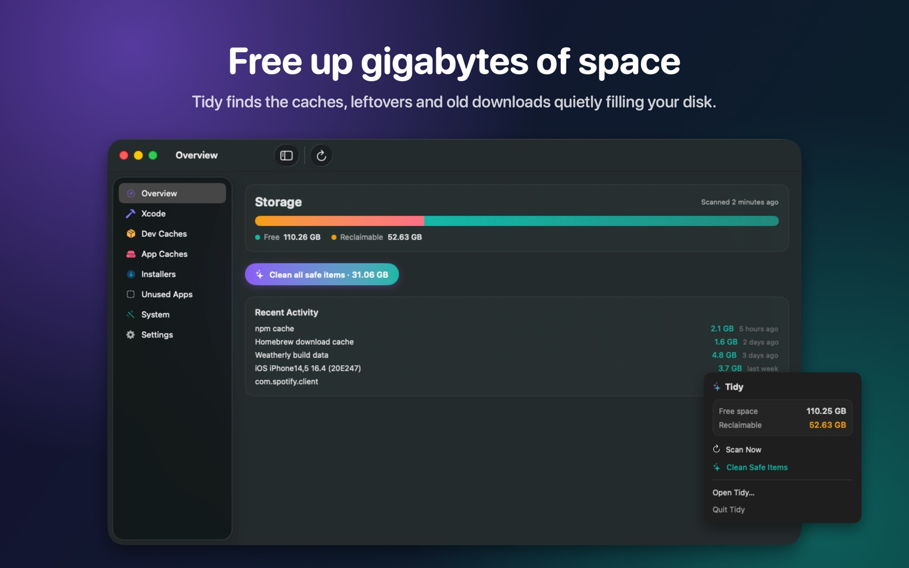
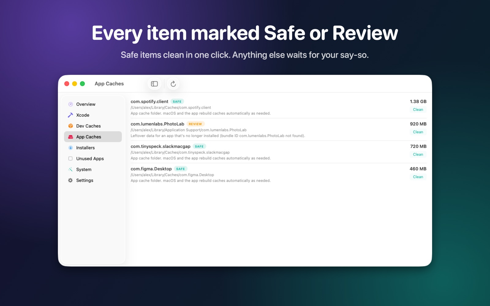
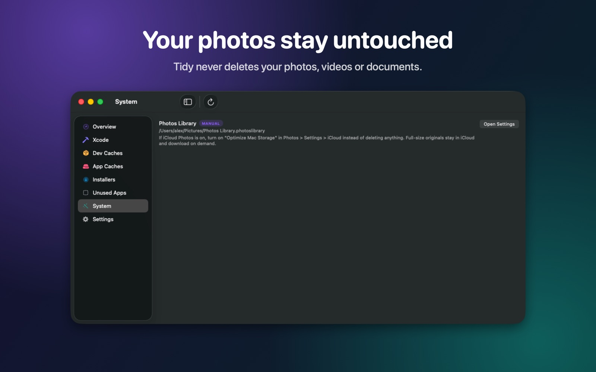
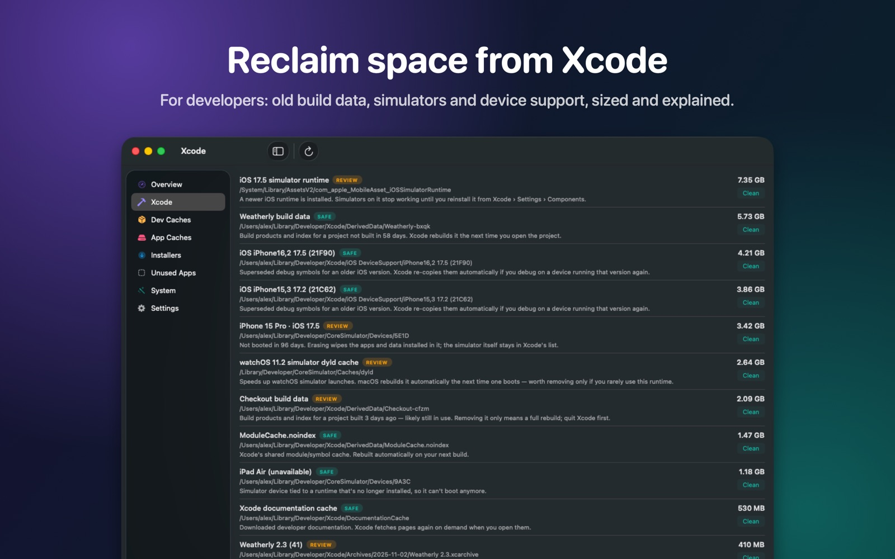
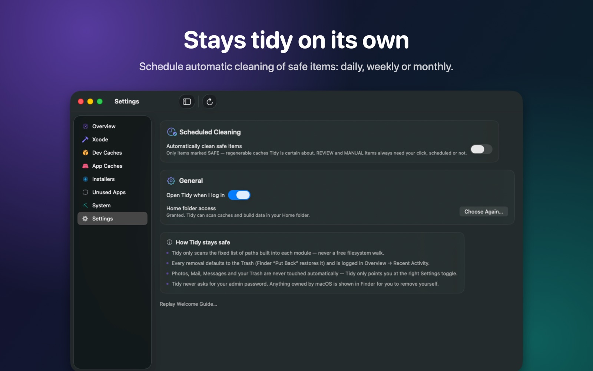

Tidy clears junk and caches, maps what's filling your disk, finds big forgotten files and removes apps completely. Every item is explained, and nothing is removed without your approval.
Download on the Mac App StoreFor macOS 13 Ventura and later · No account · No tracking

Tidy finds the space other cleaners miss, and tells you what each item is before you remove it.
App caches, leftovers from apps you've deleted, and installers you no longer need.
See your folders drawn to scale, who each one belongs to, and clean what's safe right from the map.
Find big videos, disk images and archives you haven't opened in months.
Remove an app together with the settings, caches and data it leaves behind.
General cleaners miss the biggest offenders on a developer's disk. Tidy knows where they live.
Stale DerivedData, superseded device support, old simulators, runtimes and archives.
Emulators you no longer use, unused SDK system images, and Android Studio caches.
npm, Yarn, pnpm, Homebrew, Gradle, Maven, CocoaPods, pip and SwiftPM.
node_modules and build folders in projects you haven't touched in months.
Tidy tells you what each item is and what removing it costs — before you click anything.
SAFERebuilt automatically by its tool. One click cleans them all, or schedule it.
REVIEWProbably fine to remove, but costs a re-download or rebuild — Tidy waits for you.
MANUALOwned by macOS or another app — Tidy shows you the right way to free it.
Nothing is removed without your approval. Removals go to the Trash, so Finder's "Put Back" restores them.
A native SwiftUI app that lives in your menu bar.




Tidy makes no network requests and collects no data. Automatic scans check only known cache and build locations; Large Files and Disk Map look further only when you ask.
Get Tidy